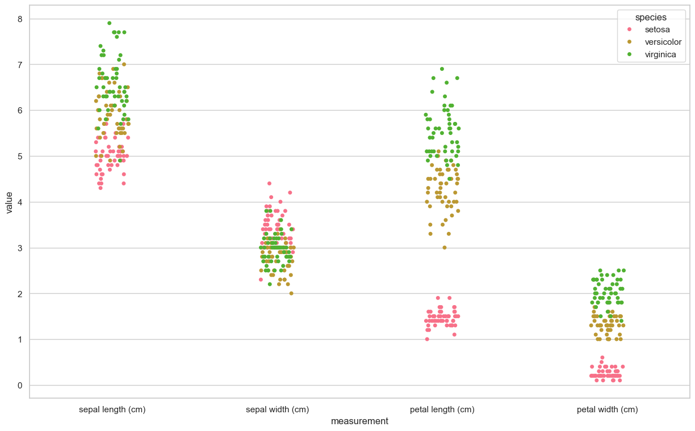

customer_1_wiek = 42
customer_1_wzrost = 178
customer_1_pozyczka = 1000
customer_1_zarobki = 5000
customer_1_imie = 'Jan'Dane ustrukturyzowane
Dane klienta to pewne wartości, które możesz przypisać do zmiennych: np wiek: 42, wzrost: 178, pozyczka: 1000, zarobki: 5000, imię: Jan
Zdefiniuj zmienne customer_1_{cecha} i przypisz im wartości z przykładu powyżej
dlaczego do analizy danych nie używamy zmiennych?
Niezależnie od typu analizowanych i przetwarzanych danych w Pythonie możemy zebrać dane i reprezentować je jako pewna formy
listy.
customer_1 = [42,178,1000,5000,'Jan']dlaczego listy nie są najlepszym miejscem na przechowywanie danych?
Weźmy dwie listy numeryczne
a = [1,2,3]
b = [4,5,6]# dodawanie list
print(f"a+b: {a+b}")
# można też użyć metody format
print("a+b: {}".format(a+b))a+b: [1, 2, 3, 4, 5, 6]
a+b: [1, 2, 3, 4, 5, 6]# mnożenie list
try:
print(a*b)
except TypeError:
print("no-defined operation")no-defined operationKażdy obiekt pythonowy można rozszerzyć o nowe metody i atrybuty.
import numpy as np
aa = np.array(a)
bb = np.array(b)
print(aa,bb)[1 2 3] [4 5 6]print(f"aa+bb: {aa+bb}")
# dodawanie działa
try:
print("="*50)
print(aa*bb)
print("aa*bb - czy to poprawne mnożenie?")
print(np.dot(aa,bb))
print("np.dot - a czy otrzymany wynik też realizuje poprawne mnożenie?")
except TypeError:
print("no-defined operation")
# mnożenie również działaaa+bb: [5 7 9]
==================================================
[ 4 10 18]
aa*bb - czy to poprawne mnożenie?
32
np.dot - a czy otrzymany wynik też realizuje poprawne mnożenie?Co działa szybciej?
def iloczyn_skalarny_lista(x: list, y: list) -> float:
iloczyn = 0.
for i in range(len(x)):
iloczyn += x[i] * y[i]
return iloczyn
a = list(range(1000))
b = list(range(1000))
%timeit iloczyn_skalarny_lista(a, b)27.9 μs ± 1.22 μs per loop (mean ± std. dev. of 7 runs, 10,000 loops each)import numpy as np
def iloczyn_skalarny_numpy(x, w):
return x.dot(w)
a = np.arange(1000)
b = np.arange(1000)
%timeit iloczyn_skalarny_numpy(a, b)545 ns ± 3.29 ns per loop (mean ± std. dev. of 7 runs, 1,000,000 loops each)# własności tablic
x = np.array(range(4))
print(x)
x.shape
A = np.array([range(4),range(4)])
# transposition row i -> column j, column j -> row i
A.T
# 0-dim object
scalar = np.array(5)
print(f"scalar object dim: {scalar.ndim}")
# 1-dim object
vector_1d = np.array([3, 5, 7])
print(f"vector object dim: {vector_1d.ndim}")
# 2 rows for 3 features
matrix_2d = np.array([[1,2,3],[3,4,5]])
print(f"matrix object dim: {matrix_2d.ndim}")[0 1 2 3]
scalar object dim: 0
vector object dim: 1
matrix object dim: 2Obliczenia wykonywane na danych mieszczących się w pamięci. > czy można jeszcze przyśpieszyć obliczenia?
Kurs Numpy ze strony Sebastiana Raschki
PyTorch
PyTorch is an open-source Python-based deep learning library. PyTorch has been the most widely used deep learning library for research since 2019 by a wide margin. In short, for many practitioners and researchers, PyTorch offers just the right balance between usability and features.
PyTorch is a
tensorlibrary that extends the concept of array-oriented programming library NumPy with the additional feature of accelerated computation on GPUs, thus providing a seamless switch between CPUs and GPUs.PyTorch is an
automatic differentiation engine, also known as autograd, which enables the automatic computation of gradients for tensor operations, simplifying backpropagation and model optimization.PyTorch is a deep learning library, meaning that it offers modular, flexible, and efficient building blocks (including pre-trained models, loss functions, and optimizers) for designing and training a wide range of deep learning models, catering to both researchers and developers.
import torch
print(torch.__version__)
print(torch.cuda.is_available())
print(torch.backends.mps.is_available())
tensor0d = torch.tensor(1)
tensor1d = torch.tensor([1, 2, 3])
tensor2d = torch.tensor([[1, 2, 2], [3, 4, 5]])
tensor3d = torch.tensor([[[1, 2], [3, 4]], [[5, 6], [7, 8]]])2.6.0
False
True# typy
print(tensor1d.dtype)
print(torch.tensor([1.0, 2.0, 3.0]).dtype)torch.int64
torch.float32tensor2d.shape
print(tensor2d.reshape(3, 2))
print(tensor2d.view(3, 2))tensor([[1, 2],
[2, 3],
[4, 5]])
tensor([[1, 2],
[2, 3],
[4, 5]])print(tensor2d.T)tensor([[1, 3],
[2, 4],
[2, 5]])print(tensor2d.matmul(tensor2d.T))
print(tensor2d @ tensor2d.T)tensor([[ 9, 21],
[21, 50]])
tensor([[ 9, 21],
[21, 50]])szczegółowe info znajdziesz w dokumentacji
Modelowanie danych ustrukturyzowanych
Rozważmy jedną zmienną (xs) od której zależy nasza zmienna wynikowa (ys - target).
xs = np.array([-1,0,1,2,3,4])
ys = np.array([-3,-1,1,3,5,7])Modelem który możemy zastosować jest regresja liniowa.
# Regresja liniowa
import numpy as np
from sklearn.linear_model import LinearRegression
xs = np.array([-1,0,1,2,3,4])
# a raczej
xs = xs.reshape(-1, 1)
ys = np.array([-3, -1, 1, 3, 5, 7])
reg = LinearRegression()
model = reg.fit(xs,ys)
print(f"solution: x1={model.coef_[0]}, x0={reg.intercept_}")
model.predict(np.array([[1],[5]]))solution: x1=2.0, x0=-1.0array([1., 9.])Prosty kod realizuje w pełni nasze zadanie znalezienia modelu regresji liniowej.
Do czego może nam posłużyc tak wygenerowany model?
Aby z niego skorzystac potrzebujemy wyeksportować go do pliku.
Wykorzystaj bibliotekę pickle w celu zapisu obiektu modelu
# save model
import pickle
with open('model.pkl', "wb") as picklefile:
pickle.dump(model, picklefile)Teraz możemy go zaimportować (np na Github) i wykorzystać w innych projektach.
# load model
with open('model.pkl',"rb") as picklefile:
mreg = pickle.load(picklefile)mreg.predict(xs)array([-3., -1., 1., 3., 5., 7.])from torch.nn import Linear
x_t = torch.tensor([1,2,3,4,5]).view(-1,1)
x_t=x_t.to(torch.float32)
m = Linear(1,1)
m(torch.tensor([1.]))tensor([-0.5447], grad_fn=<ViewBackward0>)m(x_t)tensor([[-0.5447],
[-0.8818],
[-1.2190],
[-1.5562],
[-1.8934]], grad_fn=<AddmmBackward0>)# forward
import torch.nn.functional as F
y = torch.tensor([1.0])
x1 = torch.tensor([1.1])
w1 = torch.tensor([2.2], requires_grad=True)
b = torch.tensor([0.2], requires_grad=True)
z = x1 * w1 + b
a = torch.sigmoid(z)
loss = F.binary_cross_entropy(a,y)
# automatic diff
from torch.autograd import grad
grad_L_w1 = grad(loss, w1, retain_graph= True)
grad_L_b = grad(loss, b, retain_graph= True)
loss.backward()
print(w1.grad)tensor([-0.0746])class LinearRegression(torch.nn.Module):
def __init__(self, n_input:int, n_output: int):
super(LinearRegression, self).__init__()
self.layers = torch.nn.Sequential(
torch.nn.Linear(n_input, n_output)
)
def forward(self, x):
return self.layers(x)x = np.array(xs, dtype=np.float32)
y = np.array(ys, dtype=np.float32)
X_train = torch.from_numpy(x).view(-1,1)
y_train = torch.from_numpy(y).view(-1,1)lr_model = LinearRegression(1,1)
criterion = torch.nn.MSELoss()
optimizer = torch.optim.SGD(lr_model.parameters(), lr=0.01)num_params = sum(p.numel() for p in lr_model.parameters() if p.requires_grad)
print(f"liczba trenowalnych parametrów: {num_params}")liczba trenowalnych parametrów: 2for layer in lr_model.layers:
if isinstance(layer, torch.nn.Linear):
print(f"weight: {layer.state_dict()['weight']}")
print(f"bias: {layer.state_dict()['bias']}")weight: tensor([[0.0460]])
bias: tensor([0.4732])epochs = 10
# petla uczaca
for epoch in range(epochs):
lr_model.train() # etap trenowania
y_pred = lr_model(X_train)
loss = criterion(y_pred, y_train)
optimizer.zero_grad()
loss.backward()
optimizer.step()
if (epoch+1) % 50 == 0:
print(f'epoch: {epoch+1:03d}, loss = {loss.item():.2f}')
lr_model.eval() # etap ewaluacji modelu
# po treningu jeszcze raz generujemy predykcje
lr_model.eval()
with torch.no_grad():
predicted = lr_model(X_train)lr_model.layers[0].weight, lr_model.layers[0].weight.shape(Parameter containing:
tensor([[1.0423]], requires_grad=True),
torch.Size([1, 1]))Inne sposoby pozyskiwania danych
- Gotowe źródła w bibliotekach pythonowych
- Dane z plików zewnętrznych (np. csv, json, txt) z lokalnego dysku lub z internetu
- Dane z bazy danych (np. MySQL, PostgreSQL, MongoDB)
- Dane generowane w sposób sztuczny pod wybrany problem modelowy.
- Strumienie danych
from sklearn.datasets import load_iris
iris = load_iris()
# find all keys
print(iris.keys())
# print description
print(iris.DESCR)
import pandas as pd
import numpy as np
# create DataFrame
df = pd.DataFrame(data= np.c_[iris['data'], iris['target']],
columns= iris['feature_names'] + ['target'])dict_keys(['data', 'target', 'frame', 'target_names', 'DESCR', 'feature_names', 'filename', 'data_module'])
.. _iris_dataset:
Iris plants dataset
--------------------
**Data Set Characteristics:**
:Number of Instances: 150 (50 in each of three classes)
:Number of Attributes: 4 numeric, predictive attributes and the class
:Attribute Information:
- sepal length in cm
- sepal width in cm
- petal length in cm
- petal width in cm
- class:
- Iris-Setosa
- Iris-Versicolour
- Iris-Virginica
:Summary Statistics:
============== ==== ==== ======= ===== ====================
Min Max Mean SD Class Correlation
============== ==== ==== ======= ===== ====================
sepal length: 4.3 7.9 5.84 0.83 0.7826
sepal width: 2.0 4.4 3.05 0.43 -0.4194
petal length: 1.0 6.9 3.76 1.76 0.9490 (high!)
petal width: 0.1 2.5 1.20 0.76 0.9565 (high!)
============== ==== ==== ======= ===== ====================
:Missing Attribute Values: None
:Class Distribution: 33.3% for each of 3 classes.
:Creator: R.A. Fisher
:Donor: Michael Marshall (MARSHALL%PLU@io.arc.nasa.gov)
:Date: July, 1988
The famous Iris database, first used by Sir R.A. Fisher. The dataset is taken
from Fisher's paper. Note that it's the same as in R, but not as in the UCI
Machine Learning Repository, which has two wrong data points.
This is perhaps the best known database to be found in the
pattern recognition literature. Fisher's paper is a classic in the field and
is referenced frequently to this day. (See Duda & Hart, for example.) The
data set contains 3 classes of 50 instances each, where each class refers to a
type of iris plant. One class is linearly separable from the other 2; the
latter are NOT linearly separable from each other.
.. dropdown:: References
- Fisher, R.A. "The use of multiple measurements in taxonomic problems"
Annual Eugenics, 7, Part II, 179-188 (1936); also in "Contributions to
Mathematical Statistics" (John Wiley, NY, 1950).
- Duda, R.O., & Hart, P.E. (1973) Pattern Classification and Scene Analysis.
(Q327.D83) John Wiley & Sons. ISBN 0-471-22361-1. See page 218.
- Dasarathy, B.V. (1980) "Nosing Around the Neighborhood: A New System
Structure and Classification Rule for Recognition in Partially Exposed
Environments". IEEE Transactions on Pattern Analysis and Machine
Intelligence, Vol. PAMI-2, No. 1, 67-71.
- Gates, G.W. (1972) "The Reduced Nearest Neighbor Rule". IEEE Transactions
on Information Theory, May 1972, 431-433.
- See also: 1988 MLC Proceedings, 54-64. Cheeseman et al"s AUTOCLASS II
conceptual clustering system finds 3 classes in the data.
- Many, many more ...
# show last
df.tail(10)| sepal length (cm) | sepal width (cm) | petal length (cm) | petal width (cm) | target | |
|---|---|---|---|---|---|
| 140 | 6.7 | 3.1 | 5.6 | 2.4 | 2.0 |
| 141 | 6.9 | 3.1 | 5.1 | 2.3 | 2.0 |
| 142 | 5.8 | 2.7 | 5.1 | 1.9 | 2.0 |
| 143 | 6.8 | 3.2 | 5.9 | 2.3 | 2.0 |
| 144 | 6.7 | 3.3 | 5.7 | 2.5 | 2.0 |
| 145 | 6.7 | 3.0 | 5.2 | 2.3 | 2.0 |
| 146 | 6.3 | 2.5 | 5.0 | 1.9 | 2.0 |
| 147 | 6.5 | 3.0 | 5.2 | 2.0 | 2.0 |
| 148 | 6.2 | 3.4 | 5.4 | 2.3 | 2.0 |
| 149 | 5.9 | 3.0 | 5.1 | 1.8 | 2.0 |
# show info about NaN values and a type of each column.
df.info()<class 'pandas.core.frame.DataFrame'>
RangeIndex: 150 entries, 0 to 149
Data columns (total 5 columns):
# Column Non-Null Count Dtype
--- ------ -------------- -----
0 sepal length (cm) 150 non-null float64
1 sepal width (cm) 150 non-null float64
2 petal length (cm) 150 non-null float64
3 petal width (cm) 150 non-null float64
4 target 150 non-null float64
dtypes: float64(5)
memory usage: 6.0 KB# statistics
df.describe()| sepal length (cm) | sepal width (cm) | petal length (cm) | petal width (cm) | target | |
|---|---|---|---|---|---|
| count | 150.000000 | 150.000000 | 150.000000 | 150.000000 | 150.000000 |
| mean | 5.843333 | 3.057333 | 3.758000 | 1.199333 | 1.000000 |
| std | 0.828066 | 0.435866 | 1.765298 | 0.762238 | 0.819232 |
| min | 4.300000 | 2.000000 | 1.000000 | 0.100000 | 0.000000 |
| 25% | 5.100000 | 2.800000 | 1.600000 | 0.300000 | 0.000000 |
| 50% | 5.800000 | 3.000000 | 4.350000 | 1.300000 | 1.000000 |
| 75% | 6.400000 | 3.300000 | 5.100000 | 1.800000 | 2.000000 |
| max | 7.900000 | 4.400000 | 6.900000 | 2.500000 | 2.000000 |
# new features
df['species'] = pd.Categorical.from_codes(iris.target, iris.target_names)# remove features (columns)
df = df.drop(columns=['target'])
# filtering first 100 rows and 4'th columnimport seaborn as sns
import matplotlib.pyplot as plt
sns.set(style="whitegrid", palette="husl")
iris_melt = pd.melt(df, "species", var_name="measurement")
f, ax = plt.subplots(1, figsize=(15,9))
sns.stripplot(x="measurement", y="value", hue="species", data=iris_melt, jitter=True, edgecolor="white", ax=ax)
X = df.iloc[:100,[0,2]].values
y = df.iloc[0:100,4].values
y = np.where(y == 'setosa',-1,1)plt.scatter(X[:50,0],X[:50,1],color='red', marker='o',label='setosa')
plt.scatter(X[50:100,0],X[50:100,1],color='blue', marker='x',label='versicolor')
plt.xlabel('sepal length (cm)')
plt.ylabel('petal length (cm)')
plt.legend(loc='upper left')
plt.show()
from sklearn.linear_model import Perceptron
per_clf = Perceptron()
per_clf.fit(X,y)
y_pred = per_clf.predict([[2, 0.5],[4,5.5]])
y_predarray([-1, 1])źródła zewnętrzne
IRIS_PATH = "https://archive.ics.uci.edu/ml/machine-learning-databases/iris/iris.data"
col_names = ["sepal_length", "sepal_width", "petal_length", "petal_width", "class"]
df = pd.read_csv(IRIS_PATH, names=col_names)# save to sqlite
import sqlite3
# generate database
conn = sqlite3.connect("iris.db")
# pandas to_sql
try:
df.to_sql("iris", conn, index=False)
except:
print("tabela już istnieje")tabela już istniejeresult = pd.read_sql("SELECT * FROM iris WHERE sepal_length > 5", conn)Sztuczne dane
# Dane sztucznie generowane
from sklearn import datasets
X, y = datasets.make_classification(n_samples=10**4,
n_features=20, n_informative=2, n_redundant=2)
from sklearn.ensemble import RandomForestClassifier
# podział na zbiór treningowy i testowy
train_samples = 7000 # 70% danych treningowych
X_train = X[:train_samples]
X_test = X[train_samples:]
y_train = y[:train_samples]
y_test = y[train_samples:]
rfc = RandomForestClassifier()
rfc.fit(X_train, y_train)
rfc.predict(X_train[0].reshape(1, -1))array([0])Analiza Laboratorium 3 - Chatgbt
- Praca z danymi ustrukturyzowanymi:
Ćwiczenia rozpoczynają się od reprezentacji danych klienta za pomocą zmiennych, list i struktur NumPy. Dzięki temu studenci uczą się, dlaczego listy nie są optymalne do przechowywania danych oraz jakie korzyści niesie ze sobą użycie tablic NumPy, takie jak efektywność obliczeniowa i możliwość wykonywania operacji wektorowych.
- Wprowadzenie do PyTorch:
Laboratorium wprowadza podstawy biblioteki PyTorch, prezentując jej możliwości w zakresie obliczeń tensorowych oraz automatycznego różniczkowania. To przygotowuje studentów do bardziej zaawansowanych zastosowań, takich jak budowa i trenowanie modeli uczenia maszynowego. 
Propozycje rozszerzeń
Propozycje do pracy dla studentów jako rozszerzenia:
- Integracja z Pandas: Wprowadzenie biblioteki Pandas do pracy z danymi tabelarycznymi pozwoliłoby studentom lepiej zrozumieć manipulację danymi i ich przygotowanie do analizy.
Pandas DataFrames został omówiony jako podobieństwo obiektów pythona do tabel SQL.
- Wizualizacja danych: Dodanie ćwiczeń z wykorzystaniem bibliotek takich jak Matplotlib czy Seaborn umożliwiłoby studentom lepsze zrozumienie danych poprzez ich graficzną reprezentację.
Częściowe przykłady pokazują jak wykorzystać analizę danych za pomocą bibliotek takich jak Matplotlib czy Seaborn, oraz jak interpretować otrzymywane wyniki.
- Praktyczne zastosowania: Zaproponowanie mini-projektu, w którym studenci analizują rzeczywiste dane (np. dane finansowe czy dane z mediów społecznościowych) przy użyciu poznanych narzędzi, zwiększyłoby zaangażowanie i pokazało praktyczne zastosowanie zdobytej wiedzy.
Projekt analizy danych tabelarycznych realizowany jest jako jedno z zadań domowych.
- Porównanie z innymi bibliotekami: Przedstawienie różnic między NumPy, PyTorch i TensorFlow w kontekście analizy danych mogłoby pomóc studentom w wyborze odpowiednich narzędzi do konkretnych zadań.
Podsumowanie
Laboratorium 3 stanowi solidne wprowadzenie do pracy z danymi ustrukturyzowanymi i wykorzystania bibliotek NumPy oraz PyTorch. Dodanie powyższych rozszerzeń mogłoby jeszcze bardziej zwiększyć wartość edukacyjną zajęć, przygotowując studentów do realnych wyzwań w analizie danych w czasie rzeczywistym.